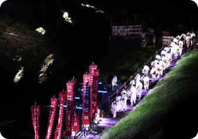
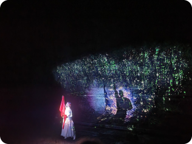

Date : 2021. 10. 01 ~ 2021. 10. 17
Main Program :
- Walking Tour : the Origin Trail, Lava Trail, Cave Trail, and the Stone and Life Trail
- Special Exploration : Manjanggul Lava Tube, Bengdwigul Lava Tube
- World Natural Heritage Commemoration Ceremony

